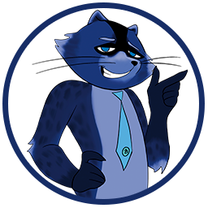

Hi there! I am a Galactic Raccoon.
Very soon I launch the educational game "Blockchain on the Doorstep" to provide people insight into the cryptocurrencies and digital assets, and help them master a new profession or income generation tools!!
With me you will find out:
- What is Blockchain, Bitcoin, Cryptocurrencies and CBDC?
- What is farming, minting and liquidity pool?
- Why are cryptocurrencies needed and how to distinguish valuable tokens from "crypto-trash"?
- How and where to earn tokens safely and with no risk, and how to store them safely?
- How to issue your own token?
In my game you can earn tokens by completing tasks and completing quests. And you can get more in-depth knowledge by investing coins in your training. Play and earn now!
How can you help?
Become a backer and participate in the initial fundraising. In return, we will offer you project tokens at the rate of 2 tokens for each donated dollar (in USDT exchange rate).
You can hold the tokens and use them in the future in the game or to participate in the DAO, or sell them after the tokens enter the open market (the planned sale price is 5 USDT per token).
The starting stage with such an incredibly low price will last only until the end of February (2023), don't miss it!
You can read more about terms and conditions here in the presentation. And full information about the project is in the OnePage.
Contact my team and we will tell you more about everything you want to know!
+20 in karma for a repost and 10 BoD for a friend who joined the project.
And if you want to learn more about the future of the Internet and WEB3, then take a look at the presentation "What is WEB3 and why you don't need BINANCE"!